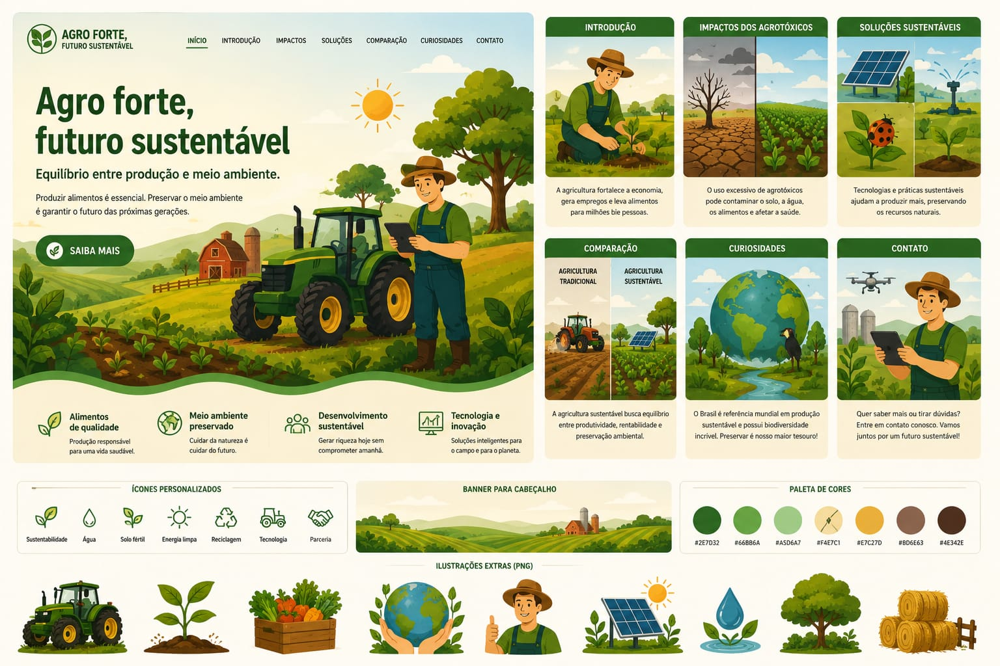

Produzir alimentos com responsabilidade e preservar o meio ambiente é o caminho para um futuro melhor.

O agronegócio é essencial para o Brasil, mas precisa ser sustentável.
O uso excessivo de agrotóxicos pode prejudicar o solo, água e saúde.
Técnicas como irrigação inteligente e controle biológico ajudam o meio ambiente.